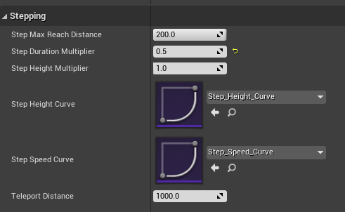

Walk Node
Power IK comes with a dedicated Anim Graph node for procedurally generating walking animation.
Experimental / Beta: This node is under active development. Future versions will support fully parameterized style adjustment for hip sway, tilt, bobbing, leaning, arm sway, running and more. But even in it's current form, we expect many users will find it useful.

How it Works
It helps to understand how the Walk node works.
The Walk node requires and responds to root motion. When an Actor containing a Skeletal Mesh running a Walk anim graph node is moved in world space, the Walk node responds to the motion by planting and unplanting the feet in a stepping behavior.
Where to place the feet for the next step is determined by raycasting from the Actor's current world space location and rotation. So the Walk node requires a custom trace channel and sufficient world collision. Additionally, if the Actor is not rotated to face the movement direction, the Walk node will generate "strafing" type locomotion.
The Walk node does not care about the source of the movement and works equally well if it is from AI navigation, a player controlled Pawn class, or even by manually translating or rotating the Actor with the mouse in the editor.
Setup a Walk Node

- In the Animation Graph, create a Power IK Walk node
- Connect the Output Pose of the Power IK Walk node
- Set the Character Root bone (see Ground Node docs for a description of how to choose a Character Root)
- In the Details section of the Walk node, click the + icon next to the Feet array to add each foot.
- Set the Start Bone and End Bone names for each leg / limb.
- Compile the animation blueprint.
- Select the Walk node and observe the yellow diamonds on the feet bones. If you do not see yellow diamonds, double check the Character Root and Start/End bone names are correctly filled out on all limbs.
- Test the Walking behavior and tune the settings as required.
Note: Be sure to setup the "Related Limbs" array as described below to prevent the feet from both stepping at the same time!
Limb Settings

Start Bone: The name of the bone at the origin of the leg. Usually a "hip" or "shoulder".
End Bone: The name of the bone at the end of the leg. Usually the "foot".
Limb Max Length Multiplier: By default, the raycasts use the initial distance between the Start Bone and End Bone (in the Reference pose) to determine the length of the raycasts used to determine the next footstep location. If the leg is modeled with a large amount of bend by default, you may want to adjust this to allow the raycasts more distance to search for a step.
Step Length Multiplier: The step length is the maximum distance from the current planted foot position to the new target foot location (as determined by raycasts) before a "step" is triggered. Values between 0 and 1 will produce shorter steps. Values greater than 1 will create larger steps.
Step Duration: The time, in seconds, that this foot will take from unplanting to replanting. Smaller values will produce faster stepping.
Step Height: The maximum height, in centimeters, that this foot will reach at the apex of the step.
Related Limbs: A list of integer values cooresponding to other limbs in the array that are related to this one. Related limbs will NOT unplant at the same time.
Rotate Foot to Ground: A float value from 0 to 1 that determines how much the foot will orient to the ground collision normal. A value of 1 orients the feet exactly to the ground.
Foot Collision Radius: A radius around the foot, in centimeters, that is considered "off limits" for other feet to occupy. The foot solver does collision checks to prevent other feet from planting within or passing through this collision radius. This prevents the dreaded "kicking through your shins" bug that plagues all strafing systems.
Stepping Settings

Step Max Reach Distance: A distance, in centimeters, that clamps the root motion to prevent the feet from searching for a new planted position too far from the prior planted position. This is only ever used when the root motion is too fast for the stride length and step duraction to keep up.
Step Duration Multiplier: A global multiplier for all limbs to adjust the time per step.
Step Height Multiplier: A global multiplier for all limbs to adjust the height per step.
Step Height Curve (Optional): A curve asset, normalized from 0 to 1, that describes how much of the foot height to apply for the duration of the step; where 0 is the start of the step and 1 is the end.
Step Speed Curve (Optional): A curve asset, normalized from 0 to 1, that scales the speed of the foot motion for the duration of the step; where 0 is the start of the step and 1 is the end. The default curve eases the foot into and out of steps.
Teleport Distance: The maximum world space distance, in centimeters, that the feet are allowed to be from the Actor location. If the feet are detected beyond this distance, an instant single-frame teleportation is applied to force them back to the Actor's location. This may happen if the Actor is teleported, moved too quickly or when initially spawned.
Collision Settings
Set the Collision Channel to the Unreal trace channel that you want the limbs to raycast against. See the Ground Node docs for more information about how to set this up.
Constraints and Solver Settings
The Walk node is a custom wrapper of the core Power IK solver. See the Solver Node settings for a description of Bend Directions, Excluded Bones, Joint Limits and Max Squash/Stretch Iterations.
Debug View
You can view the foot plant locations and ray casts by hitting ~ to bring up the command console and executing the command:
showdebug ANIMATION
Use Page Up/Down to select the Actor with the Walk node and observe the debug view of the foot effectors, planted locations and raycasts.
Testing Setup
When first setting up a Walk node, it can be helpful to have a blank Actor blueprint to test with. This allows you to Eject while playing in editor, select the Actor and move/drag it with the mouse to observe how the Walking behavior is working.
- Create a blank Actor blueprint
- Add a Skeletal Mesh Component to the Actor
- Create an Animation blueprint for the Character
- Set the Skeletal Mesh Asset and Animation Blueprint on the Skeletal Mesh Actor Component
- Add a Power IK Walk node to the Animation Blueprint
- Setup the Walk node as described in the Setup a Walk Node section
Now the setup is ready to test:
- Drag the Actor onto a floor into a test level.
- Hit Play, then hit Eject.
- Select the Actor and press W to enter move mode.
- Drag the Actor across the floor to observe the Walking behavior.
In this way, you can iterate on the settings until the desired walking behavior is achieved.
Once you are happy with the behavior, copy the Walk node into the final Animation Blueprint (whether AI controlled or player).